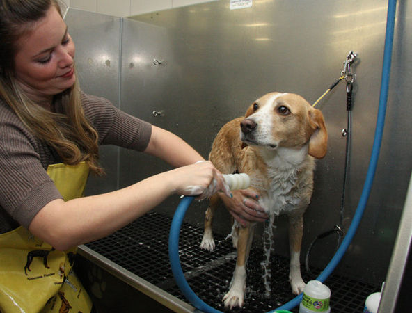
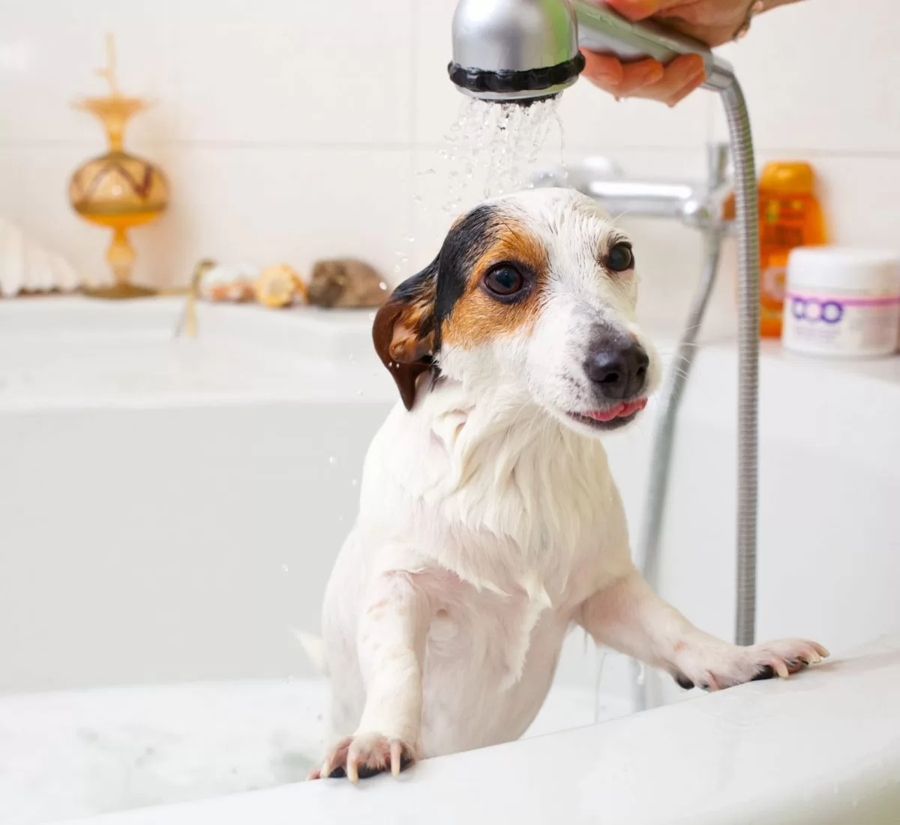
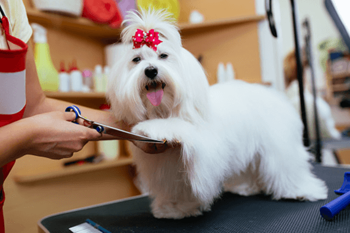
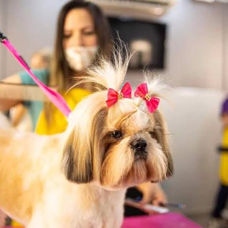
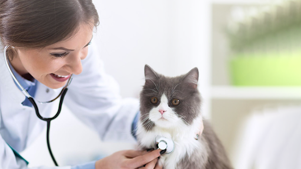
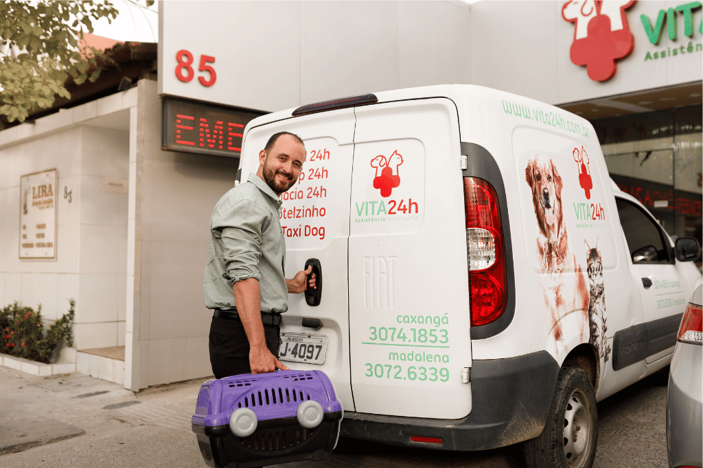

Nossos Serviços
No Delicatto Pet Shop, oferecemos cuidados especiais para garantir o bem-estar e a felicidade do seu pet.

Banho e Higiene
Cuidados de higiene para manter seu pet limpo, confortável e bem cuidado.

Hidratação e Tratamento de Pelagem
Tratamentos especiais para hidratar, nutrir e cuidar da pelagem do seu pet, proporcionando maciez, brilho e uma aparência saudável.

Tosa
Cuidados com a pelagem para proporcionar conforto e bem-estar ao seu melhor amigo.

Cuidados Especiais
Atenção e carinho em cada detalhe, respeitando as necessidades de cada pet.

Atendimento Veterinário 24h
Atendimento veterinário disponível 24 horas, oferecendo assistência e cuidado para seu pet sempre que necessário.

Taxí Pet
Transporte confortável e seguro para levar seu pet a consultas veterinárias, banho, tosa e outros compromissos, com praticidade e cuidado durante todo o trajeto.